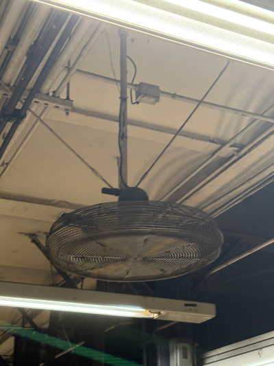

I take a right as I exit the gate and walk down the stairs.
It's a short walk to the train.
I felt like I left an important thing back home but I still stayed either way.
Maybe it was my charger... Maybe it was my galsses...
These are the first things I noticed when I got down there:
- Trash everywhere on the tracks.
- Sweat dripping down my back already.
- People standing away from the tracks to avoid possibly getting pushed in.
- The wind from the oncoming train hitting my face.
I get off at Lafayette to transfer to the 6 train.
There are a crowd of people rushing to catch their next train.
Everybody was bumping my shoulder to get to their next destination.
Finally 14th Street / Union Square.

I get off of the train and the first thing that hits me is a strong wind from the fans above. It looks really rusty and old.
My hair is all over the place.
After the walk to school, I sat down in class.
I already felt exhausted but I have class until 10pm.
- Sweat from my back cooling off.
- Slight pump in my legs.
- Laptop opened but nothing on it.
Time to do it all over again tomorrow!